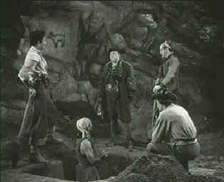

| Captain Kidd/C,C+(F) |
| Roan/1945/80/FS1.33/BW |
The name of Captain Kidd conjures up images of ferocious sea pirates roaming the high seas with ruthless abandon. It's reasonable to expect a movie of that name to provide an abundance of action and thrills, sea battles and sword play, with enough rapier wit to fill a treasure chest. Alas, me hearties, Captain Kidd makes a rather tepid film voyage, with little action or excitement.
 |
| Captain Kiss is not a recovered treasure. @Roan |
The dubiously
researched story of Kidd centers around one particular voyage of
intrigue in service of King William III. Practically ignored is
the fact that Kidd was actually a respected resident of New York
who journeyed to England in search of a commission in the Royal
Navy. Kidd's fateful voyage turns into a personal confrontation
of revenge and deceit, with most of the action played out in the
cabins of his ship..
Charles
Laughton plays Kidd with a bag of facial ticks and sneers,
imposing himself on the role with more intellectual guile than
physical stature. Still, the chief pleasures of the film are
watching Laughton spit out his words with the parries of a great
swordsmen. But that's the limit of the fun, despite an excellent
cast of supporting players. Randolph
Scott plays Adam Mercy, a seaman who joins Kidd's ship with
his own mission in mind. Scott, often dashing in Western roles,
isn't given much room to roam as Mercy. Gilbert Roland gets some
dubious Latin moments as one of Kidd's henchman and John
Carradine smoothly plots with Kidd as a shipmate Orange Povey,
mysteriously (Something was cut from the film.) returned from
the "dead." Henry Daniell playing King William III,
merely serves as a reminder of what swashbucklers could be,
harking back to his role as Lord Wolfingham in the wonderful The
Sea Hawk opposite Errol
Flynn.
Directed by Rowland V. Lee from a story
by his brother Robert N. Lee, Captain Kidd lacks any
directing flair. It's a mundane voyage on a small budget.
Production design and cinematography are similarly pinched.
The DVD transfer is a mixed bag. Part
of the Roan Collection, the DVD introduction boasts restored
"Produced and Restored by Cary Roan." Restored is a
powerful word. To begin with, the DVD runs approximately 80
minutes. Research sources indicate Captain Kidd's running
time is 89 minutes. Does that mean this DVD is missing a reel?
(If that is the case the DVD rating slips to an F.) The transfer elements have plenty of scratches and dirt, though
numerous scenes appear to have been overworked with the digital
paintbox producing a soft image. There's an abundance of black
in the transfer and range at times seems compressed. Overall, Captain
Kidd is a watchable DVD. The mono sound is very clean,
almost the most pleasing aspect of this DVD. Dialogue is cleanly
delivered and the elegant Werner Janssen score sounds grand.

The
Feature
Archive has articles ranging from Akira
Kurosawa to Blonde
Bimbos and John
Ford.

Click on the image of The
Heistmasters for an interesting feature on the tough guys
that pull off the big jobs.

The Movie Poster Archive include extensive poster images from the films of stars like Susan Hayward, Kirk Douglas, Katharine Hepburn and many more. Our featured star is Lana Turner.

Need a daily fix of movie quotes. Reel Quotes Newsletter has the answer. Click on the Reel Quotes symbol for more.


The Big Combo
has style to spare in reviewing films and producing feature
articles. Check out their special "Lingo" section.

Reviews of affordable remote
controls in the market place. Codes and tips as well.
 Brad
Lang continues to add more interesting to the extensive collection
at Classic
Movies. Everything from actors and actress to
your favorite directors is linked at the site.
Brad
Lang continues to add more interesting to the extensive collection
at Classic
Movies. Everything from actors and actress to
your favorite directors is linked at the site.

Cinemedia
is the largest film and media directory with over 25,000
links.